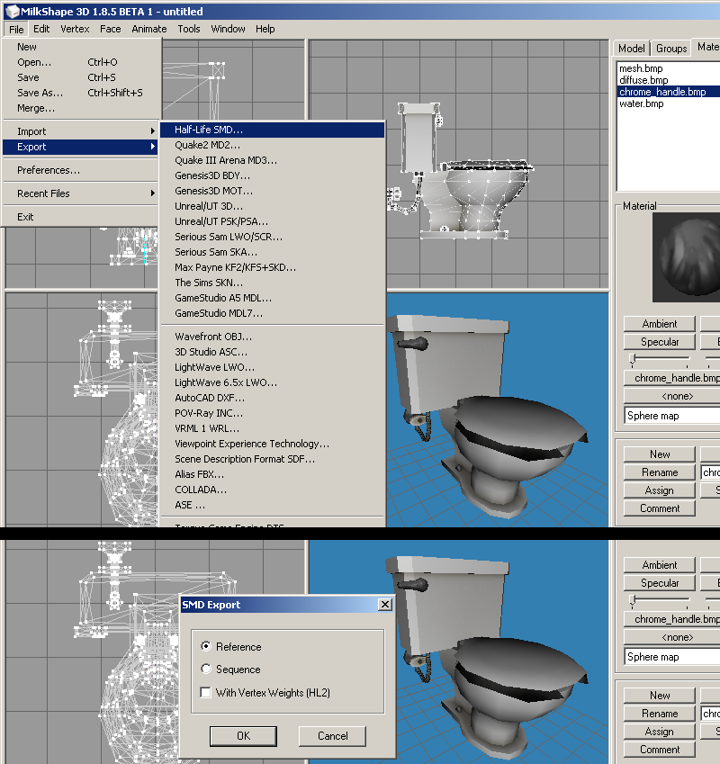
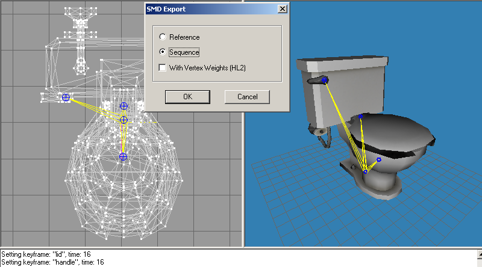
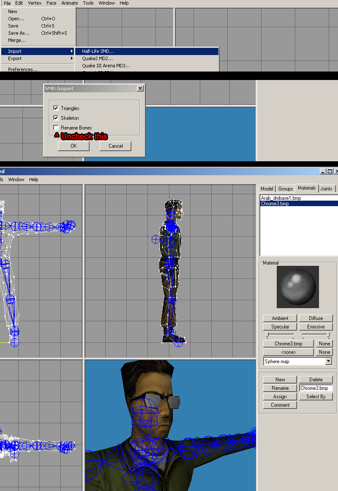

MilkShape3D comes with SMD export/import ability right out of the box so no additional downloads are needed. MilkShape is an older style 3D editor that only supports editing in triangles, so you wont be able to work with edge loops or edge selection. If you are using a special _CHROME texture it can be realtime displayed when set as "spheremap" in render rollout in the materials tab.
Important note: do NOT use the MilkShape built-in Decompiler, its horribly error prone, gives bad results and outdated. Same with the "compile" tool. Use Crowbar for all your compiling/decompiling needs.
Also, I highly suggest you try fragMOTION as it has a much superior workflow for animation (has curves, multiple animations, and IK & onion skin utilities) and way less error prone especially when it comes to editing imports. MS3D suffers from issues with breaking smoothing groups of imported SMD's and adding additional bones, where fragMOTION does not.
Jump to Exporting Animations Jump to Importing Meshes & Animations
Exporting Reference Mesh
1) In milkshape 3D check your Groups and make sure the texture names end with .bmp.
2) File > export "Half-Life SMD..."
3) Check "Reference" at the options box.

Exporting Animation Sequence
1) Go out of "Animation Mode". Go to File > export "Half-Life SMD..."
2) Check "Sequence" at the options box.

Importing Meshes & Animations
1) Go to File > import "Half-Life SMD..."
2) Uncheck "Rename Bones" at the options box.

Some notes on MS3D imports: